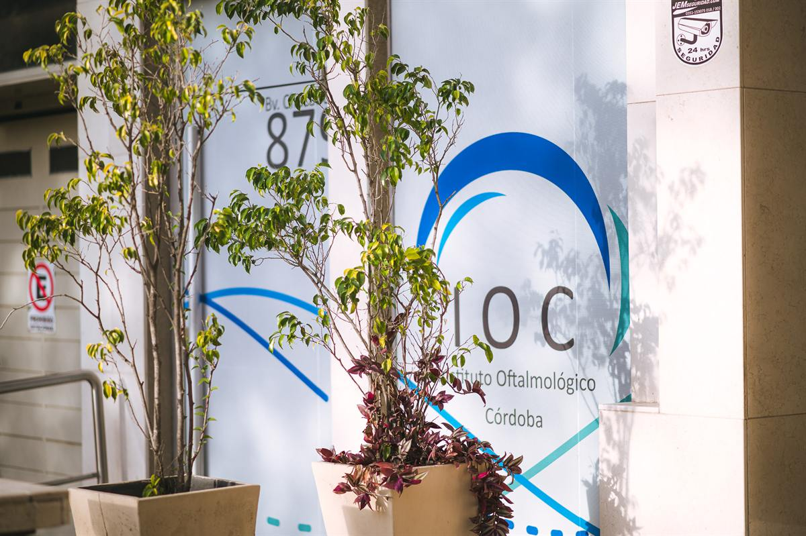
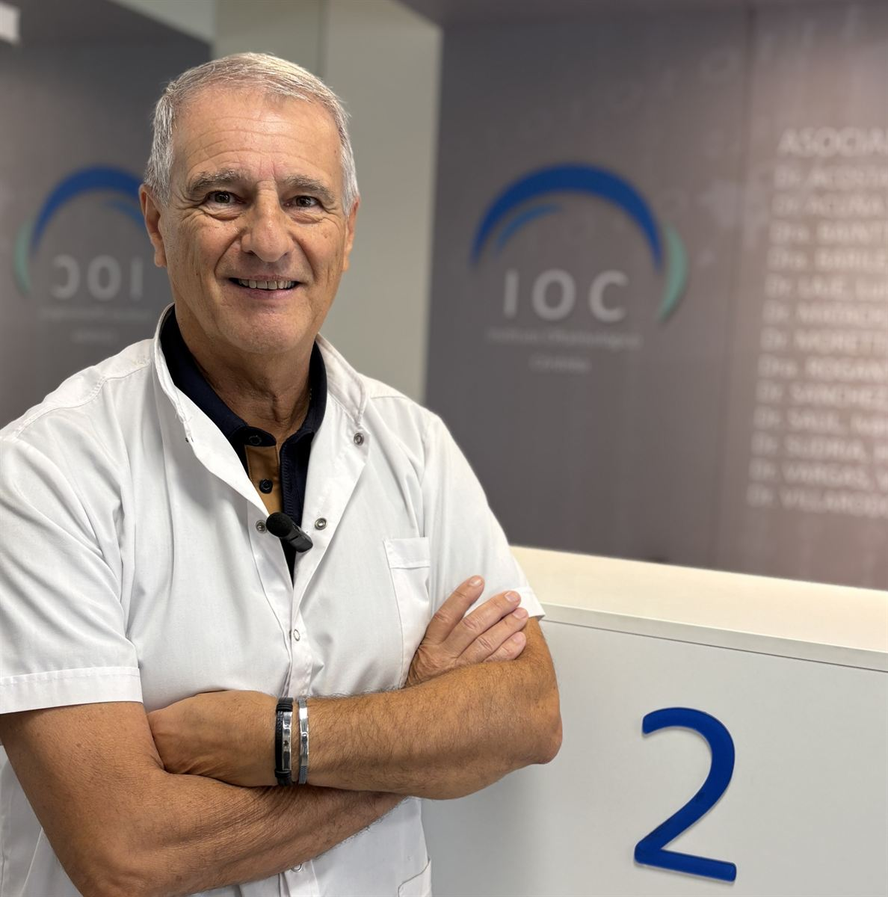
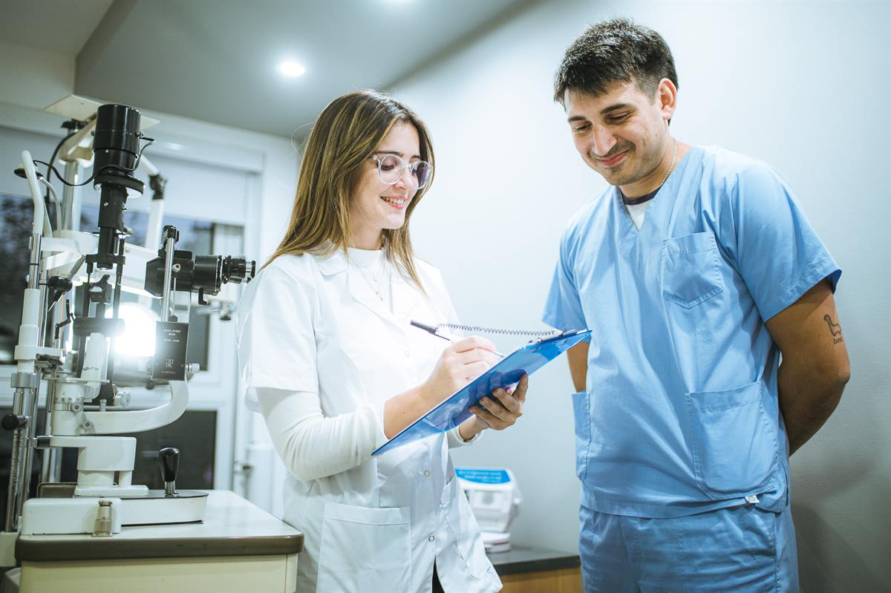

Quiénes somos
Instituto Oftalmológico de Córdoba
Desde 1974 brindamos atención oftalmológica especializada en Córdoba.
Historia institucional
Un proyecto médico pionero en Córdoba
El Instituto fue fundado en el año 1974 por el Dr. Luis Laje Poviña, el Dr. Mario Alberto Manzi y el Dr. Prof. Domingo Tácite.
A lo largo de 50 años sostuvimos una atención médica cercana, actualizada y orientada a mejorar la calidad de vida.


Referentes y profesionales asociados
Contamos con el aporte de grandes referentes
A los socios fundadores se sumó el aporte de referentes y oftalmólogos/as asociados/as.



Formación académica
Residencia, docencia y aprendizaje continuo
La formación de nuevos profesionales forma parte de la identidad del instituto. La actividad académica acompaña la práctica clínica con supervisión, actualización y trabajo en equipo.